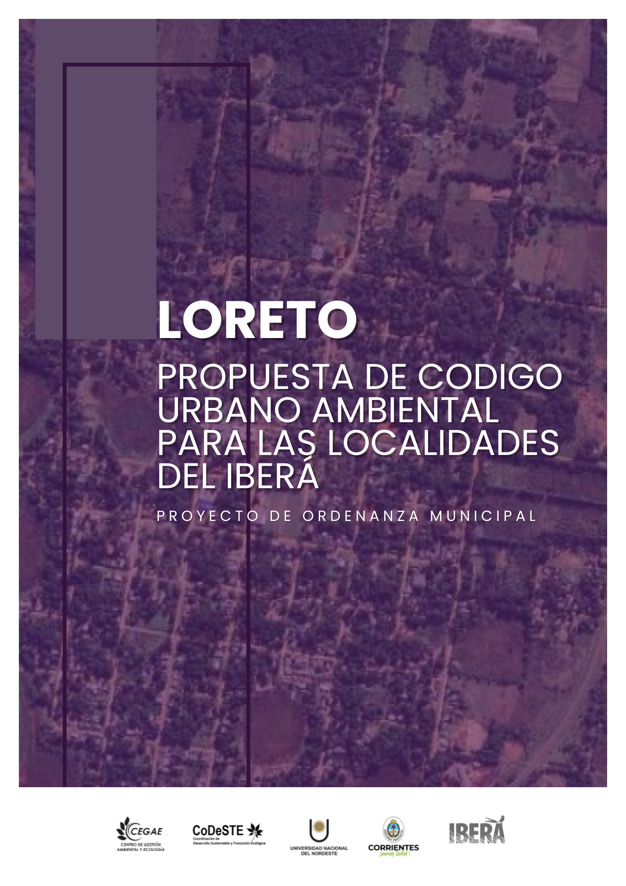
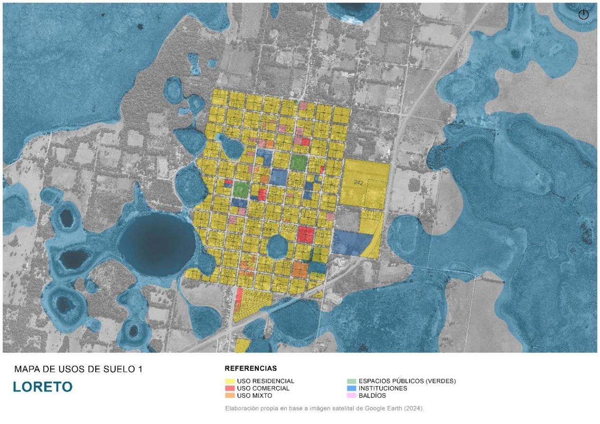
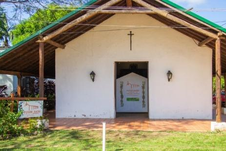
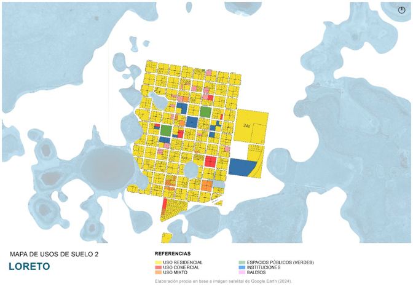
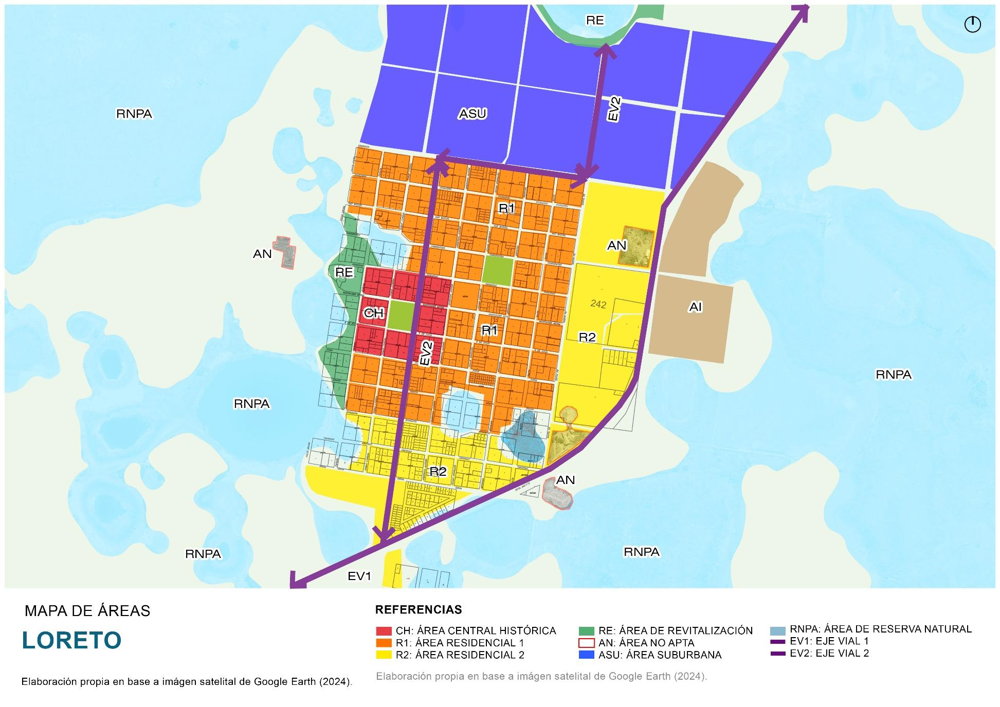

Loreto, territorio posible
Hoja de ruta para un proyecto preliminar de ordenamiento territorial participativo entre Iberá, memoria y futuro.
Integrantes: Juan Pablo Ybarra y Sebastián Slobayen
Materia: Ordenamiento y Planificación Territorial
Docente: Dra. Vanesa Crissi Aloranti

No se presenta un plan ejecutado: se diseña el proyecto para construirlo
Idea preliminar
Una hoja de ruta técnica y política para iniciar un proceso futuro de ordenamiento territorial.
Metodología propuesta
Se indican técnicas, actores, instrumentos, tiempos y productos esperados; no se ejecutan entrevistas ni talleres en esta instancia.
Insumo transferible
El resultado busca ser presentable ante municipio, UNNE, Comité Iberá y actores locales como punto de partida operativo.
El desafío doctoral es pasar del diagnóstico disperso a una arquitectura de acuerdos territoriales.
Fuente: consigna Trabajo Final 2026, UNRC.
Loreto en el centro-norte correntino: pequeña escala, alta densidad territorial
Ubicación contextual
- Localidad del Departamento San Miguel, provincia de Corrientes.
- Vinculada al sistema Iberá y al Portal San Antonio.
- Población municipal 2022: 3.513 habitantes.
- Escala adecuada para una metodología bottom-up y una mesa territorial de actores.
Fuentes: Instituto Provincial de Estadística y Ciencia de Datos de Corrientes; trabajos previos de planificación turística cargados.
Un portal natural no garantiza por sí solo desarrollo territorial
El Portal San Antonio posiciona a Loreto en el mapa del Iberá, con avistaje de fauna, kayak, senderismo, astroturismo y experiencias de naturaleza. El problema territorial es traducir ese flujo en capacidades urbanas, empleo local, servicios y conservación.

Fuentes: Parque Iberá; Turismo Corrientes; Código Urbano Ambiental Loreto.
El nudo no es solamente turístico: es urbano, ambiental e institucional
Necesidades y limitaciones
- Déficit o insuficiencia en servicios básicos: agua, cloacas, residuos, drenajes y accesibilidad.
- Estacionalidad turística y baja permanencia promedio.
- Oferta fragmentada y débil integración entre actores.
- Escasa sistematización de información para decidir.
Tensión principal
El flujo del portal tiende a concentrarse en el atractivo natural. El casco urbano necesita captar más derrame económico sin degradar los humedales ni banalizar el patrimonio.
Pregunta orientadora: ¿cómo ordenar Loreto para integrar servicios, ambiente, patrimonio, turismo y gobernanza?
Aporte inédito: articular gestión de riesgos hídricos con turismo religioso-cultural y turismo de naturaleza.
Fuentes: Plan Estratégico de Desarrollo Turístico Loreto 2025–2035; Código Urbano Ambiental Loreto.
Loreto cuenta con recursos que pueden organizar una agenda territorial propia
Iberá y humedales
Portal San Antonio, biodiversidad, avistaje, kayak, senderismo y astroturismo.
Memoria e identidad
Patrimonio jesuítico-guaraní, religiosidad, capillas, museo sacro y paseo fundacional.
Vida urbana
Plaza, centro cultural, gastronomía local, artesanías y servicios de escala comunitaria.
Innovación situada
Jurassic Plant, educación ambiental, producción agroecológica y divulgación científica.

Fuentes: Municipio de Loreto; Parque Iberá; antecedentes turísticos y Código Urbano Ambiental.
El proyecto no parte de cero: integra antecedentes sectoriales y normativos
Plan turístico 2025–2035
Propone gestión participativa, destino sostenible, calendario anual, observatorio turístico y diversificación de experiencias.
Código urbano ambiental
Delimita áreas centrales, residenciales, ejes viales, reservas naturales, áreas no aptas y zonas de revitalización.
Ordenanzas propuestas
Incluyen protección de humedales y protección integral de inmuebles de interés arquitectónico y patrimonial.
La hipótesis de trabajo: hay piezas valiosas; falta una hoja de ruta que las convierta en gobernanza territorial.
Fuentes: Plan Estratégico de Desarrollo Turístico Loreto 2025–2035; Propuesta de Código Urbano Ambiental; Trabajo Final 2026.
Diseñar una hoja de ruta para iniciar el ordenamiento territorial participativo de Loreto
Objetivo general
Formular un proyecto preliminar de ordenamiento territorial para Loreto que articule ambiente, servicios básicos, patrimonio, turismo, riesgo hídrico y gobernanza local, mediante una metodología participativa y factible de ser presentada ante actores institucionales y comunitarios.
Específico 1
Caracterizar el sistema territorial y sus tensiones críticas.
Específico 2
Proponer una metodología bottom-up con actores, técnicas e instrumentos.
Específico 3
Definir cronograma, factibilidad y resultados esperados para la etapa inicial.
Ciencia Transformadora: del diálogo de saberes al diálogo de haceres
Ciencia Transformadora
El conocimiento no se limita a describir problemas; busca habilitar decisiones situadas, acuerdos, capacidades y micro-transformaciones institucionales.
Territorio posible
El OT opera como instrumento de política y gestión ambiental: ordena usos, protege bienes comunes y construye escenarios viables con actores reales.
Integración conceptual para Loreto
Riesgo hídrico + humedales + patrimonio + turismo + servicios básicos dejan de ser temas separados y pasan a integrarse como un sistema territorial de decisiones.
Referencias conceptuales: Gómez Orea; Bozzano; Massiris Cabeza; Crissi Aloranti.
La mesa de cuatro patas: equilibrio entre poder, conocimiento, producción y comunidad
Aplicación a Loreto
- Político: municipio, Provincia, Comité Iberá.
- Académico: UNNE, UNRC, equipos técnicos.
- Productivo: prestadores, gastronomía, artesanos, servicios.
- Social: vecinos, escuelas, organizaciones, referentes culturales.
Araña y Hormiga: relevar datos y tejer redes
Fase Hormiga
Recorre, registra, ordena y verifica: cartografía, antecedentes, infraestructura, servicios, actores, usos del suelo, patrimonio y vulnerabilidades.
Fase Araña
Conecta, acuerda y prioriza: mesa territorial, talleres, matriz FOAR, resultados esperados, compromisos institucionales y validación social.
En Loreto, investigar es hacer visible el sistema y construir condiciones para actuar sobre él.
Medio físico, humedales y población: condiciones de base

Lectura territorial
- El casco urbano se ubica en relación directa con ambientes lacustres y humedales.
- La escala poblacional facilita procesos participativos, recorridas y validación comunitaria.
- Los cuerpos de agua son patrimonio ambiental, atractivo turístico y restricción a la urbanización.
- La gestión del riesgo hídrico debe incorporarse desde el inicio.
Fuente: Código Urbano Ambiental Loreto; Instituto Provincial de Estadística y Ciencia de Datos de Corrientes.
Actividades, asentamiento, canales de relación e instituciones
Asentamiento
Área central histórica, residenciales, ejes viales, áreas de revitalización, áreas no aptas y reservas naturales.
Actividades
Turismo de naturaleza, cultura, gastronomía, artesanías, servicios urbanos, educación ambiental y economía local.
Marco legal
Ley General del Ambiente 25.675, normativa provincial, ICAA, Código Urbano Ambiental y ordenanzas de humedales y patrimonio.

Fuente: Código Urbano Ambiental Loreto; Ley 25.675.
La propuesta se construye desde abajo hacia arriba, con evidencia y acuerdos
1. Revisión documental
Plan turístico, Código Urbano Ambiental, ordenanzas, Censo, cartografía, normativas, fuentes públicas.
2. Trabajo territorial
Recorridas, fichas de observación, registro fotográfico, mapa de servicios, accesos, áreas críticas y bienes patrimoniales.
3. Escucha situada
Entrevistas a Dirección de Turismo, municipio, prestadores, guías, escuelas, vecinos y referentes culturales.
4. Talleres
Cartografía social, priorización de problemas, aspiraciones, resultados verificables y validación de propuestas.
5. Matriz FOAR
Fortalezas, oportunidades, aspiraciones y resultados, orientada a acción y factibilidad.
6. Producto final
Documento técnico preliminar, mapa de actores, cartera inicial de acciones y hoja de ruta institucional.
Resultados esperados para seis meses de formulación
Fortalezas
Iberá, identidad loretana, patrimonio, escala comunitaria, antecedentes técnicos.
Oportunidades
Comité Iberá, UNNE, agenda de turismo sostenible, astroturismo y ordenanzas ambientales.
Aspiraciones
Casco urbano integrado al portal; servicios mejorados; patrimonio vivo; turismo todo el año.
Resultados
Mesa territorial, diagnóstico validado, mapa de prioridades, cartera inicial y propuesta de implementación.
Factibilidad
Media-alta: 75%. Por escala local, antecedentes existentes, apoyo técnico universitario y oportunidad institucional Iberá.
Cierre
Loreto puede pasar de portal turístico a territorio articulado: conservar, habitar, recibir visitantes y decidir colectivamente.